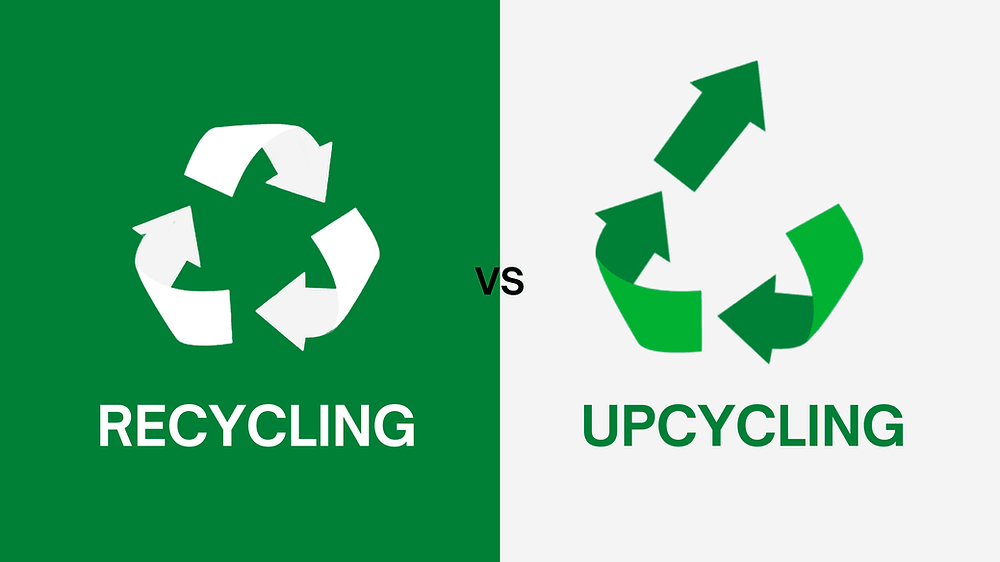
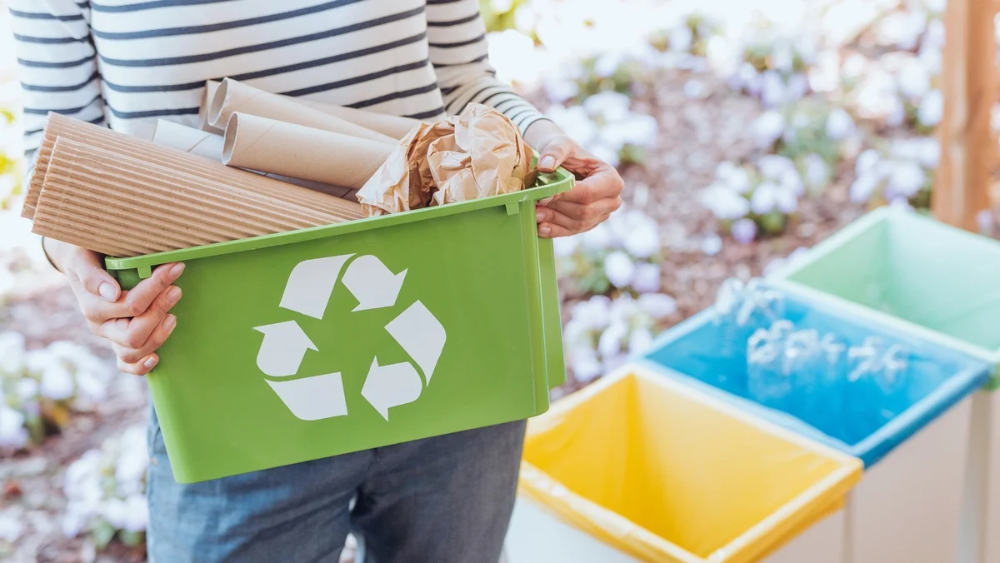

We’re all familiar with the concept of recycling, where the materials we use are turned into new things, saving energy and resources. You might also have heard of upcycling. What does it mean? And what’s the difference between upcycling and recycling?
There are two main ways to reuse materials: recycling and upcycling. Recycling takes old materials and breaks them down into new materials that can be used for other products. Upcycling takes old materials and transforms them into something new and better than what they were before.
Despite the almost subtle distinctions between upcycling and recycling, what both terms imply is a heightened awareness of our consumer decisions and responsibilities in relation to what we do with our possessions after we've used them.
Both recycling and upcycling are important parts of going green and reducing your carbon footprint. But what’s the difference between the two? Let’s take a closer look.
Upcycling
• Upcycling, takes existing materials or products and transforms them into something better, often with a completely different function.
• The primary goal of upcycling is to maximize the potential of discarded items while minimizing waste.
What Can Be Upcycled?
Upcycling is a creative process of finding new use or purpose in a previously discarded item. It involves taking an item that would otherwise be wasted and improving it in some way to make it useful again.
Old and outdated furniture is a popular upcycled "material". A cabinet or chest of drawers may be quickly and easily restored by sanding, painting, and adding new handles.
However, upcycling is more than just upgrading or renovating things into improved versions of themselves; objects are frequently repurposed to serve a completely different function.
Plastic bottles, for example, can be used to make a variety of items, including a face visor, a plant container, a watering can, fairy lights, and even a bird feeder.
Old jeans may be used to create backpacks, tops can be woven together to make shopping bags or plant holders. It's also possible to turn a single dress into a two-piece garment.
What Cannot Be Upcycled?
There are limitations to items that can be upcycled despite the repurposing or any attempts at improvement and upgrades. Items which are damaged or broken beyond repair, have become dangerous to use, they contain hazardous materials eg. foam that is toxic when burnt.
When you are certain that an article in its current form cannot be used anymore and needs to be broken down and reformulated, then recycling is a better option. For instance, metals like copper and aluminum might bring more value being recycled than upcycled, sitting as a paperweight or art piece.
Recycling
• Recycling, on the other hand, involves breaking down used materials into their base components (like plastic bottles into plastic pellets) and then using those components to create new products.
• While recycling reduces waste and conserves resources, it often requires a significant amount of energy and may result in a lower-quality product.

What Can Be Recycled?
Generally, anything made from paper can be recycled, including newspapers, magazines, cardboard, and office paper. Also, some plastics, glass from bottles and containers, metals from cans made from tin, aluminum, and steel can all be recycled. Just make sure that they are clean and free of food and other contaminants.
Commonly recycled materials are concrete, steel, aluminums, plastics (such as PET, PP, PBT, and PLA), textiles, wood, glass, and paper.
What Cannot Be Recycled?
Although a lot of products can be recycled fairly easily, some items, unfortunately, can’t. This is because they are either too contaminated or not made from materials that can be recycled cleanly for economic reasons.
Examples are plastics used for containing bathroom toiletry products eg. toothpaste or food packaging would require more energy and costs to recycle compared to the raw virgin material. Certain types of foam, such as polystyrene, are difficult and expensive to recycle since they are mostly air and frequently contaminated.
It is also difficult to recycle items that closely integrate mixed materials into their function or feature because it is difficult or time-consuming to separate. For example, dual-material products like glossy paperboard materials used to hold liquids or foods, prove difficult to separate, or mixed-plastic products since the plastics may require different processing.